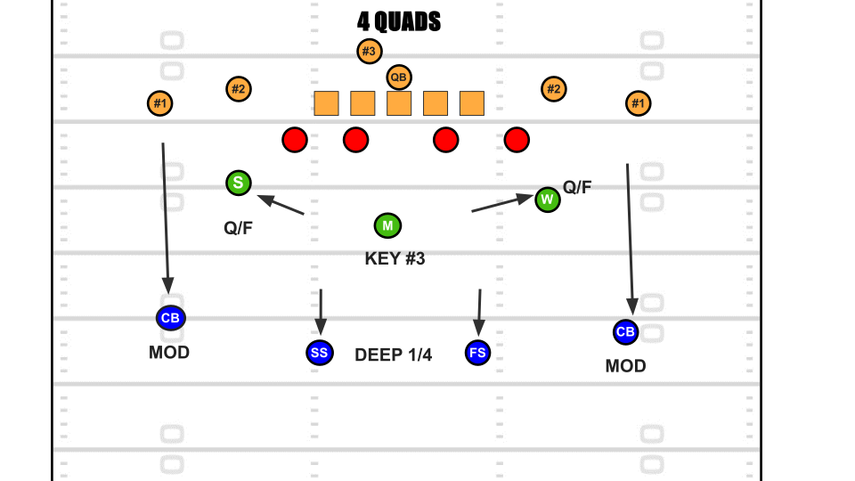

The coverages shown on this page will be cover 2, cover 3, cover 4, and tampa 2. These are the most common zone coverage calls.
Cover 2
Techniques
Corners play Squat: Read #2 if #2 vertical/in Sink & Jam #1 inside and guard the flat. Apex play Wall #2: Jam #2 out at L.O.S. and carry if vertical, if #2 out pass to the corner and look for crossers. Mike play Read #3: If #3 out to flat wait for crossers, if #3 vertical play man to man. Safeties play deep ½: If #1 vertical play man to man coverage in "Poach" technique. If #1 not vertical look for vertical routes from #2 or crossers from the other side of the field.
Strengths
Cover 2 Palms in action
Very good on short down and distances especially versus dangerous slot receivers i.e. Tyreek Hill, Travis Kelce, Cooper Kupp. Commonly used on 2nd and 3rd and short. Can also be played in tandem with cover 4 in certain passing formations.
Weaknesses
Tampa 2 3x1 in action
Deep middle of the field is vulnerable as safeties are responsible for the deep boundary in cover 2. This is what makes Tampa 2 a popular alternative as a Linebacker becomes responsible for the deep middle. However, Tampa 2 doesn't always nullify that weakness because some receivers are took fast for the Linebacker covering the deep middle.
Cover 3
Techniques
Corners play MOD. Man to Man coverage on #1 unless the receiver breaks in within 5 yards. Apex Defenders play Seam/Flat (can also be safety depending on call): If #2 out or vertical play man to man on #2, if #2 in deliver to Mike or Safety. Buzzing Safety and Mike play Hook/Curl watch for intermediate crossers. If #3 is fast to the flat make "Bump" call to apex defenders and assume their role. Deep 1/3rd safety watches for deep post and seam routes down middle of the field.
Strengths
Cover 3 Whip 3x1 in action
Commonly used early down coverage that is both strong against the run and the pass. Cover 3 is strong versus the run because the underneath safety assists the linebackers in the run game. Cover 3 is strong in the passing game because it negates the weaknesses of Cover 2 and 4; a deep 1/3rd safety in the middle of the field, and extra flat defenders underneath.
Weaknesses
Deep Middle 1/3rd safety is placed into conflict with two seam routes and can get caught between choosing 1 route over the other. Deep in routes combined with post routes also put deep middle 1/3rd defender in conflict. Hook defenders can get beat with intermediate crossers on play action passes from the offense.
Cover 4 "Quarters"
Techniques

Corners play MOD. Man to Man coverage on #1 unless breaks in within 5 yards. Apex defenders play Quarter/Flat: If #2 flat under 6 yards play man to man on #2, if #2 vertical pass to safety, if #2 pass to Mike and play Read #3. Mike plays Read #3: if 3 is fast to the flat deliver to apex and assume apex responsibility, if #3 blocks zone off and look for crossers. Safeties Play deep ¼: Read #2, if #2 vertical man to man #2, if #2 goes under help corner with #1 and look for deep crossers.
Strengths
Cover 4 Quarters 3x1 in action
Prevents deep plays downfield. Very strong against vertical and "man beating" route concepts. Flexible coverage that can be used against any passing formation (3x1, 3x2, and 2x2). Can be run with any 4 man pressure and some 5 man pressures.
Weaknesses
Cover 4 deliberately gives up the flat in order protect the deeper portions of the field therefore making Cover 4 effective in specific scenarios. Cover 4 is not good on 1st down or 2nd/3rd and short, but great on long passing downs i.e. 3rd and Long.